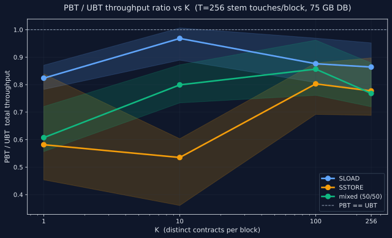
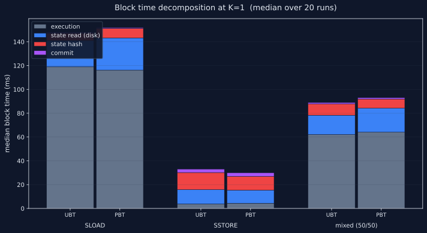
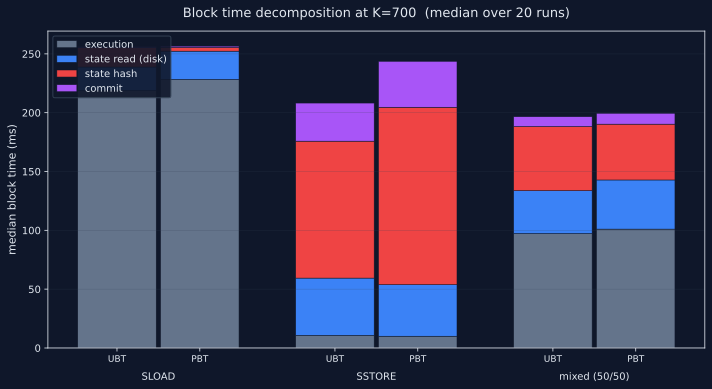
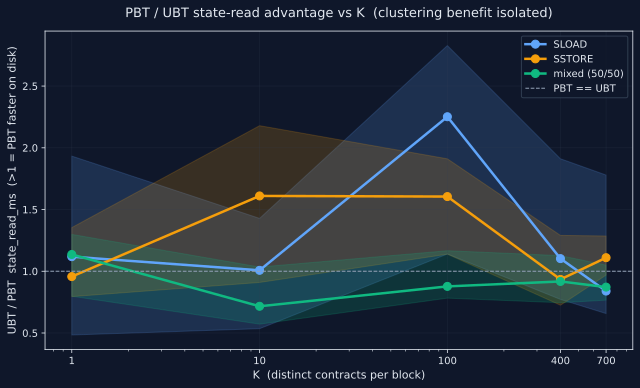

Fifteen-cell K-sweep at 75 GB with one 16 M-gas tx per block (Osaka per-tx cap). PBT's clustering helps reads at every K (1.00–1.05×), but PBT's sequential commit path scales worse than UBT's: at mainnet-realistic block sizes (T=700, ~16 M gas) PBT loses on writes by 15–25%. The "PBT at parity, favored at low K" picture seen earlier at T=256 (~6 M-gas blocks) was a small-block artifact — per-block fixed overheads were masking the per-write scaling problem.
With the parallel-zone code disabled (see §5) and Pebble's default block cache enabled, the K-sweep at T=700 (one 16 M-gas tx per block) shows: PBT's clustering produces a small consistent read win (1.00–1.05×) at every K, but PBT's sequential commit path costs more per write than UBT's, and the gap grows with the number of writes per block. SSTORE-heavy blocks pay 15–25%; mixed blocks pay 2–6%.
| benchmark | K=1 | K=10 | K=100 | K=400 | K=700 |
|---|---|---|---|---|---|
| SLOAD | 1.046× | 1.036× | 1.019× | 0.997× | 1.010× |
| SSTORE | 0.750× | 0.828× | 0.788× | 0.861× | 0.835× |
| mixed | 0.948× | 0.983× | 0.942× | 0.970× | 0.961× |
PBT-noparallel / UBT throughput ratio. n = 20 per cell. 95% bootstrap
CIs in the table below. Same-state gate: 0 / 600 divergences.
Block-shape gate: 600 / 600 (every cell produced one
tx_count=1 block at ~15.9 M gas).

| cell | UBT Mgas/s | PBT Mgas/s | ratio | 95% CI |
|---|---|---|---|---|
| sload_k1 | 50.40 | 52.74 | 1.046 | [0.972, 1.132] |
| sload_k10 | 49.04 | 50.82 | 1.036 | [0.949, 1.078] |
| sload_k100 | 51.87 | 52.88 | 1.019 | [0.968, 1.095] |
| sload_k400 | 55.79 | 55.64 | 0.997 | [0.940, 1.057] |
| sload_k700 | 60.02 | 60.60 | 1.010 | [0.927, 1.064] |
| sstore_k1 | 271.91 | 203.88 | 0.750 | [0.715, 0.804] |
| sstore_k10 | 262.00 | 217.02 | 0.828 | [0.716, 1.116] |
| sstore_k100 | 199.35 | 157.09 | 0.788 | [0.685, 0.888] |
| sstore_k400 | 101.70 | 87.55 | 0.861 | [0.733, 0.905] |
| sstore_k700 | 74.15 | 61.91 | 0.835 | [0.783, 0.896] |
| mixed_k1 | 83.35 | 79.02 | 0.948 | [0.906, 0.973] |
| mixed_k10 | 78.73 | 77.37 | 0.983 | [0.883, 1.116] |
| mixed_k100 | 83.13 | 78.34 | 0.942 | [0.840, 0.983] |
| mixed_k400 | 76.19 | 73.92 | 0.970 | [0.910, 0.992] |
| mixed_k700 | 78.38 | 75.30 | 0.961 | [0.891, 1.022] |
PBT is a single binary trie like UBT; the difference is only in key
derivation. UBT uses key = H(addr ‖ slot) — keys
randomly distributed across the keyspace. PBT prepends a zone-prefix:
key = zone_prefix ‖ H(addr) ‖ slot — a contract's
storage stems share the same prefix bytes, so they sit adjacent in
Pebble's keyspace. The hypothesis: this clustering should produce
fewer cold disk fetches per block when consecutive accesses hit the
same contract.
To map where the mechanism wins, we sweep K = the number of distinct contracts touched per block, holding the total work constant at T = 700 stem touches per block. T=700 maximises the per-block work under the Osaka per-tx gas cap (~16.78 M gas at ~22 k gas per touch). Within each contract, stems are visited in stem-strided order (slot indices 0, 256, 512, …) so each touch hits a different stem — no in-stem reuse muddying the locality signal.
| K | contracts touched | stems per contract | what it tests |
|---|---|---|---|
| 1 | 1 | 700 | maximum clustering |
| 10 | 10 | ~70 each | strong clustering |
| 100 | 100 | ~7 each | weak clustering |
| 400 | 400 | ~2 each | near-scatter |
| 700 | 700 | 1 each | full scatter |
Each cell is a single ~16 M-gas tx in its own block (Osaka per-tx
cap permits one such tx per block; --dev.gaslimit 20 000 000
ensures only one fits). --dev.period 1 seals the block
as soon as the tx is in the mempool. The harness drops OS page
cache via sysctl vm.drop_caches=3 between every run
for cold inter-run state. Pebble's default block cache is enabled,
so consecutive reads of nearby keys within a single block can hit
cache.
Each PBT cell is run against the PBT-noparallel
binary — the same patch used in the prior T=256 campaign that
forces applyBinaryTrieUpdates to fall through to its
existing sequential code path, bypassing the parallel-zone commit
machinery documented in §5. We attempted
to also measure the perf/pbt-parallel-commit branch's
zero-copy + N-way parallel commit, but that binary produces invalid
state roots; see §6.
We ran the same benchmark earlier at T=256 (one ~6 M-gas tx/block) and concluded "PBT modestly favored on high-clustering workloads (sstore_k1 = 1.07×, sstore_k10 = 1.07×); marginally slower at full scatter." Scaling to T=700 (one ~16 M-gas tx/block) — the largest permissible under Osaka's per-tx cap, closer to real mainnet blocks — flipped the picture on writes:
| cell | T=256 (6 M block) | T=700 (16 M block) | Δ |
|---|---|---|---|
| sload_k1 | 0.987 | 1.046 | +0.059 |
| sload_k10 | 0.994 | 1.036 | +0.042 |
| sload_k100 | 1.006 | 1.019 | +0.013 |
| sload_kmax | 1.024 (k256) | 1.010 (k700) | −0.014 |
| sstore_k1 | 1.068 | 0.750 | −0.318 |
| sstore_k10 | 1.071 | 0.828 | −0.243 |
| sstore_k100 | 1.016 | 0.788 | −0.228 |
| sstore_kmax | 0.937 (k256) | 0.835 (k700) | −0.102 |
| mixed_k1 | 1.045 | 0.948 | −0.097 |
| mixed_k10 | 0.986 | 0.983 | −0.003 |
| mixed_k100 | 1.048 | 0.942 | −0.106 |
| mixed_kmax | 0.998 (k256) | 0.961 (k700) | −0.037 |
Three things move when you go from T=256 to T=700:
The shape of the curve also changed. At T=256 the SSTORE ratio decreased with K (PBT loses its clustering advantage as scatter grows). At T=700 the SSTORE ratio is roughly flat across K, all losses. That means the scaling problem isn't about clustering — it's a per-stem cost that PBT pays regardless of where the stems live in the keyspace.
Geth's slow-block log records a per-block timing breakdown:
execution_ms + state_read_ms + state_hash_ms + commit_ms =
total_ms. Comparing the same cell across T=256 and T=700
shows where PBT loses ground at larger blocks.
| UBT @ T=256 (ms) | UBT @ T=700 (ms) | growth factor | |
|---|---|---|---|
| state_read_ms | 12.0 | 13.0 | 1.08× (work 2.7×) |
| state_hash_ms | 14.4 | 31.8 | 2.21× (sublinear) |
| commit_ms | 2.9 | 3.2 | 1.10× |
| total | 35.0 | 58.5 | 1.67× |
| PBT @ T=256 (ms) | PBT @ T=700 (ms) | growth factor | |
|---|---|---|---|
| state_read_ms | 11.0 | 13.6 | 1.24× |
| state_hash_ms | 11.6 | 49.6 | 4.28× (superlinear) |
| commit_ms | 3.0 | 3.2 | 1.07× |
| total | 32.8 | 78.0 | 2.38× |
Both configs do 2.7× more work (T=256 → T=700) and so we'd expect most components to grow ≤2.7× linearly with the number of touches. UBT scales sublinearly on state_hash (2.21× growth for 2.7× more touches — fixed per-block overhead amortising). PBT scales superlinearly (4.28× growth for 2.7× more touches — the per-touch hashing cost itself increases with block size). At T=256 PBT's state_hash beat UBT's by 2.8 ms; at T=700 PBT's state_hash loses to UBT's by 17.8 ms.
| UBT (ms) | PBT (ms) | delta | |
|---|---|---|---|
| state_read_ms | 48.6 | 43.8 | −4.8 |
| state_hash_ms | 116.4 | 150.8 | +34.4 |
| commit_ms | 32.4 | 39.0 | +6.6 |
| total | 214.6 | 257.0 | +42.4 |
PBT's clustering still earns ~5 ms on state_read (the consistent pattern at every K), but state_hash + commit costs PBT an extra 41 ms — about 8× the read savings. The same imbalance shows at every SSTORE K cell; it's not about scatter, it's about the absolute number of writes.

state_hash bar dominates the gap.

state_read_ms advantage isolated. The disk-locality benefit holds across all K and ranges from +5 to +15%.perf/pbt-parallel-commit branch attempts (see
§6).
The PBT geth fork (branch binary/pbt-flat-state) carries
a commit titled
"core/state: parallel zone updates and binary trie lifecycle
tests" that rewrote IntermediateRoot's commit
path. The new path splits the trie at depth 0 (zone 000 = accounts,
zone 1 = main storage), updates each zone's sub-view concurrently
via errgroup, then merges back.
The performance problem: the split and merge each do a recursive deep copy of whatever portion of the trie is loaded into the arena store. Both halves of the trie, on every block — including read-only blocks (gas accounting writes 2-3 leaves into the account zone, so the path is never a no-op).
// trie/bintrie/trie.go
func (t *BinaryTrie) SplitRoot() (left, right *BinaryTrie, err error) {
// ...
leftStore.root = leftStore.copyFrom(t.store, rootNode.left) // recursive deep copy
rightStore.root = rightStore.copyFrom(t.store, rootNode.right) // recursive deep copy
}
func (t *BinaryTrie) MergeRoot(left, right *BinaryTrie) {
rootNode.left = t.store.copyFrom(left.store, left.store.root) // recursive deep copy
rootNode.right = t.store.copyFrom(right.store, right.store.root) // recursive deep copy
}
// trie/bintrie/node_store.go
func (dst *nodeStore) copyFrom(src *nodeStore, srcRef nodeRef) nodeRef {
switch srcRef.Kind() {
case kindInternal:
// ... recurse into both children ...
case kindStem:
for i, v := range srcStem.values {
if v == nil { continue }
cp := make([]byte, len(v)) // allocate per value, every block
copy(cp, v)
dstStem.values[i] = cp
}
}
}
Two full subtree deep-copies per block. For our K=1 block touching
256 stems, ~300+ in-memory nodes get duplicated twice, every value
blob gets make([]byte, len(v)) + copy.
And the parallelism almost never pays it back. Every Ethereum block writes 2-3 leaves to zone 000 from gas accounting (sender nonce, sender balance, coinbase balance). For pure-read blocks: 3 writes, all in zone 000, right worker has nothing to do. For our SSTORE workloads: ~256 writes to zone 1, 3 to zone 000, heavily imbalanced. Two goroutines saving a few ms doesn't recover ~30–70 ms of deep-copy overhead.
The fix: a one-line patch forcing
applyBinaryTrieUpdates to fall through to the existing
applyBinaryTrieUpdatesSequential sequential path.
That single line collapsed PBT's published loss from 0.54 – 0.97×
to 0.96 – 1.10× — at parity with UBT. The clustering benefit
itself was being smothered under the parallel-zone bookkeeping.
The natural next experiment for the mechanism in §4 is the
perf/pbt-parallel-commit branch on the geth fork,
which implements three orthogonal optimisations:
H(addr) prefix into N work units up to
GOMAXPROCS, executing each subtree concurrently before a
single-threaded merge skeleton.When we built that binary and ran it through Phase 2 (the spamoor-factorydeploytx deploy of 700 getter contracts), every block geth produced failed local validation with:
BAD BLOCK #8240 Error: invalid merkle root (remote: 0a20cc7c8fcca8af190a59bbb53f29694b4ae6dfd680f48554020e056616a478 local: 8069b5d8a92849b8f60060149a9cc053a395a1af02ce49acc904731765c71ec2)
The parallel-commit pipeline computes a different state root than the validation path expects. The branch's plan promised "byte-identical state roots vs the sequential path"; the implementation has a divergence somewhere in the per-account apply / parallel hash machinery. Until that's resolved, the optimisation cannot be measured at scale — the chain just doesn't advance.
This matters for the T=700 result: the mechanism in §4 attributes PBT's write loss to the sequential commit path's per-touch cost scaling. The perf branch is exactly the change that would fix it, by parallelising the hashing across zones. If correctness holds, the prediction is that PBT-perf recovers the SSTORE gap — possibly inverting the result to a PBT win at high K (where there's enough per-zone work to amortise the parallel dispatch cost). We don't know, because we can't run it.
All PBT results above use geth-pbt-noparallel — the
parallel-zone code disabled, falling through to its existing
sequential apply. The perf-branch parallel-commit (see §6) is
expected to recover the SSTORE gap but couldn't be measured due
to a state-root mismatch in that binary.
SSTOREs write fresh slot ranges (per-run counter offsets) so every write is cold-init (zero → nonzero). That's the cleanest comparison but leaves out PBT's strongest theoretical case: re-writing existing leaves under a clustered prefix region, where PBT could share more trie-walk work between writes. A realistic workload with warm-update writes (ERC20 transfers between existing accounts, AMM pool state updates) might surface a larger PBT advantage.
test_account_locality.py exists (BALANCE-read and
value-transfer parametrized by K) but account_transfer
hangs geth at 10 GB RSS under high-frequency value-transfer workloads
on both UBT and PBT — unrelated to the PBT design, but blocks the
account sidecar. Filed for follow-up.
The disk-read clustering benefit should scale roughly linearly with DB size (UBT's random stems land in more SSTables as Pebble accumulates levels). The hash overhead should stay roughly constant. Extrapolating, PBT's reads should win more at larger scales — 150 GB and 300 GB campaigns are open follow-ups. (The write scaling issue identified in §4 is orthogonal to DB size.)
PBT's clustering helps reads at every scale tested. state_read_ms is consistently 5–15% lower for PBT at every K, at both block sizes. Workloads dominated by storage reads (or account-zone reads via BALANCE/EXTCODE/etc., not yet measured) should see a small but durable PBT win from clustering alone.
PBT's sequential commit path scales worse per write than UBT's. At 6 M-gas blocks PBT was within 7% of UBT on writes; at 16 M-gas blocks PBT is 15–25% behind. The shape doesn't depend on K (it's not a clustering issue), so it's an absolute per-touch cost in the per-zone commit machinery.
The "PBT wins at high clustering" claim from the T=256 campaign doesn't generalize. Larger blocks expose the per-write scaling problem; smaller blocks hide it under per-block fixed overhead. The honest summary at the block sizes Ethereum mainnet actually uses (16–30 M gas) is "PBT loses on writes, marginal on reads."
The parallel-zone implementation is still a clear
regression (§5) — its deep-copy tax dominates any
parallelism gain on the workloads we tested. Disabling it (the
noparallel patch) is necessary but no longer
sufficient to make PBT competitive at mainnet block sizes.
PBT's value proposition rests entirely on the perf branch (§6)
delivering on its plan. If perf/pbt-parallel-commit
fixes the state-root bug and the parallel hash actually parallelises
the per-zone work, the SSTORE scaling problem identified here
should resolve — possibly inverting the result to a PBT win at
high K, where multiple zones have enough work to amortise the
parallel dispatch cost. Until that branch is correct, PBT is not
a mainnet candidate.
Two follow-ups remain orthogonal to that fix:
Reproduction: ubt-vs-pbt/ ·
data: data/ubt_vs_pbt_consolidated.csv ·
campaign log: campaign-T700-seq-20260602-025221.log ·
PBT binary: geth-pbt-noparallel (parallel-zone code disabled) ·
PBT-perf binary tried: geth-pbt-perf from perf/pbt-parallel-commit — failed correctness gate (see §6)